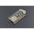
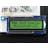
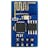

Things used in this project
Hardware components |
|
|  | DFRobot FireBeetle ESP32 IOT Microcontroller (Supports Wi-Fi & Bluetooth) |
|  | Adafruit RGB Backlight LCD - 16x2 |
|  | Espressif ESP8266 ESP-01 |
Software apps and online services |
|

|
Arduino IDE |
Story
Introduction
1.1 Motivation
Paralysis patients often face significant challenges in communicating with their caregivers due to their limited mobility and speech impairments. This can lead to frustration, isolation, and a reduced quality of life. However, advancements in technology, particularly in the field of Internet of Things (IoT), have the potential to revolutionize healthcare for paralysis patients by enabling improved communication, remote monitoring, and timely alerts to caregivers.
1.2 Objectives
The primary objectives of this project are:
- To enhance communication between paralysis patients and their caregivers, enabling patients to express their needs and concerns more effectively.
- To increase independence for paralysis patients by providing them with a user-friendly system that allows for hands-free operation.
- To provide timely alerts to caregivers in case of emergencies or changes in the patient's condition, ensuring prompt and appropriate care.
1.3 Background
Existing healthcare systems for paralysis patients often rely on traditional methods, such as letter boards or eye-tracking devices, which can be time-consuming and labor-intensive for both patients and caregivers. The advancements in IoT technology, including the use of sensors, microcontrollers, and wireless communication, have enabled the development of more efficient and user-friendly systems for remote health monitoring and communication.
Design Method
2.1 Needs Assessment and Research
User Research : Interviews with paralysis patients, caregivers, and healthcare professionals revealed the need for a system that can improve communication, provide remote monitoring, and generate alerts in case of emergencies. Market Analysis : While existing solutions offer some functionality, there is a lack of comprehensive systems that address the diverse needs of paralysis patients and their caregivers. This project aims to fill this gap by developing an integrated solution that combines communication, remote monitoring, and alert features.
2.2 Concept Development
Feature Definition : The core functionalities of the system include:
- Hand motion detection using an accelerometer and gyroscope to enable hands-free operation.
- Alert generation based on predefined conditions, such as changes in vital signs or emergency situations.
- Data transmission via wireless communication to caregivers and healthcare professionals.
Design Specifications : The system will utilize an Atmega microcontroller, accelerometer, gyroscope, and wireless communication modules to meet the technical requirements.
2.3 Prototype Design
Hardware Selection : The Atmega microcontroller was chosen for its low power consumption, compact size, and ease of programming. The accelerometer and gyroscope provide accurate hand motion detection, while the wireless communication modules enable data transmission. Software Development : The prototype was developed using the Arduino programming environment and C language, which are well-suited for embedded systems and have a large community support. Initial Prototyping : The initial prototype was built by assembling the hardware components and programming the microcontroller to detect hand motions, generate alerts, and transmit data wirelessly.
2.4 User Testing and Iteration
Field Testing : The prototype was tested with paralysis patients in a controlled environment to assess its usability, comfort, and effectiveness in improving communication and remote monitoring. Feedback Collection : Feedback from users and stakeholders was collected through interviews and surveys, focusing on areas for improvement and additional features. Iterative Refinement : Based on the feedback, the prototype was refined to enhance user experience, improve reliability, and address any identified issues.
2.5 Final Design and Production
Design Optimization : The final design was optimized for efficiency, reliability, and cost-effectiveness, taking into account the feedback from user testing and the requirements of the target market. Cost Analysis : A breakdown of the production costs was conducted to ensure the system remains affordable for paralysis patients and their caregivers. Production Planning : Steps were taken to scale the project for larger use, including sourcing components, establishing manufacturing processes, and developing a distribution plan.
2.6 Implementation and Support
Community Engagement : Partnerships were formed with patient advocacy groups, healthcare organizations, and technology companies to support the implementation and ongoing improvement of the system. Ongoing Improvement : Plans were made for future updates and maintenance, including software updates, hardware upgrades, and user support, to ensure the system remains effective and relevant over time.
Solution Design
3.1 Hardware
Hardware Components : The system consists of an Atmega microcontroller, accelerometer, gyroscope, wireless communication modules, and a power supply. The accelerometer and gyroscope are used for hand motion detection, while the wireless communication modules enable data transmission to caregivers and healthcare professionals. Design and Comfort : The hardware is designed to be lightweight, compact, and comfortable for patients to wear, ensuring ease of use and minimizing any discomfort or interference with daily activities.
3.2 Architecture
Central Processing Unit : The Atmega microcontroller serves as the central processing unit, responsible for collecting data from the sensors, processing the information, and transmitting it wirelessly. Navigation and Obstacle Detection : Not applicable for this project. Communication and Feedback : The system uses wireless communication modules to transmit data to caregivers and healthcare professionals. Patients receive feedback through visual or auditory cues, such as LED indicators or vibration motors. Power Supply : The system is powered by a rechargeable battery, ensuring portability and continuous operation. Connectivity : The system connects to the internet via a wireless module, enabling remote monitoring and alert transmission to caregivers and healthcare professionals. User Interface and Mounting : The user interface is designed to be intuitive and easy to navigate, with clear instructions and feedback. The device is mounted on the patient's body, such as the arm or chest, using adjustable straps or adhesives for secure and comfortable placement.
3.3 Implementation
Hardware Assembly : The hardware components were assembled following strict guidelines and quality control measures to ensure reliability and consistency. Software Development : The software was developed using the Arduino programming environment and C language, with a focus on efficient data processing, alert generation, and wireless communication. Integration and Testing : The hardware and software were integrated and tested extensively to ensure seamless operation and compatibility. Finalization and Production : The final production steps involved sourcing components, establishing manufacturing processes, and developing a quality assurance plan to ensure the system meets the required standards. Deployment and Support : The system will be deployed with comprehensive user guides, training materials, and technical support to ensure smooth implementation and ongoing use.
Evaluation
4.1 Evaluation Process
The project's success will be evaluated based on several criteria, including:
- Improvement in communication between patients and caregivers.
- Reduction in response time for emergencies and changes in patient condition.
- Increase in patient satisfaction and quality of life.
- Feedback from healthcare professionals on the system's effectiveness and ease of use.
4.2 Theoretical and Practical Contribution
This project contributes to the field of assistive technology by demonstrating the potential of IoT in improving healthcare for paralysis patients. The practical application of the system aims to enhance the lives of paralysis patients by providing them with a user-friendly and effective communication and remote monitoring solution.
4.3 Outlook and Extensibility
Future developments may include the integration of advanced features, such as voice recognition, machine learning algorithms for personalized alerts, and integration with smart home devices for improved accessibility. Additionally, the system can be expanded to support a wider range of disabilities and health conditions, making it a versatile solution for various patient populations.